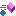

C1BarCodeデータ型で公開されるメンバを以下の表に示します。
パブリック コンストラクタ
| 名前 | 解説 | |
|---|---|---|
 | C1BarCode コンストラクタ | C1BarCode の新しいインスタンスを初期化します。 |
パブリック フィールド
トップ

プロテクト フィールド
| 名前 | 解説 | |
|---|---|---|
 | _contextStorage | System.Windows.DependencyObjectから継承されます。 |
| _controlBoolField | System.Windows.Controls.Controlから継承されます。 |
| _elementLayoutRoot | |
| _isLoaded | |
| _parent | System.Windows.Media.Visualから継承されます。 |
| _parentIndex | System.Windows.Media.Visualから継承されます。 |
| _proxy | System.Windows.Media.Visualから継承されます。 |
| _templatedParent | System.Windows.FrameworkElementから継承されます。 |
| ArrangeRequest | System.Windows.UIElementから継承されます。 |
| LayoutRootElementName | |
| MeasureRequest | System.Windows.UIElementから継承されます。 |
| sizeChangedInfo | System.Windows.UIElementから継承されます。 |
プライベート フィールド
| 名前 | 解説 | |
|---|---|---|
| _autoBounds | ||
| _barEngineDependent | ||
| _context | ||
| _defaultSizeValue | ||
| _elementCanvas | ||
| _encodingException | ||
| _engine | ||
| _measureDevice | ||
| _wholeHeight | ||
| _wholeWidth | ||
| DefaultBarHeight | ||
| DefaultDpi | ||
| STANDARD_BARWIDTH |
パブリック プロパティ
| 名前 | 解説 | |
|---|---|---|
 | ActualHeight | System.Windows.FrameworkElementから継承されます。 |
| ActualWidth | System.Windows.FrameworkElementから継承されます。 |
| AddNumber | UPC/E バーコードに２桁または５桁のアドオンシンボルを追加します。 |
| AllowDrop | System.Windows.UIElementから継承されます。 |
| AreAnyTouchesCaptured | System.Windows.UIElementから継承されます。 |
| AreAnyTouchesCapturedWithin | System.Windows.UIElementから継承されます。 |
| AreAnyTouchesDirectlyOver | System.Windows.UIElementから継承されます。 |
| AreAnyTouchesOver | System.Windows.UIElementから継承されます。 |
| AutoSize | True に設定した場合、バーコードはコントロールにちょうど収まるように自動的に拡大されます。 |
| Background | System.Windows.Controls.Controlから継承されます。 |
| BarDirection | バーコードの方向を取得または設定します。 |
| BarHeight | バーコードのバーの高さをインチ単位で設定します。バーの高さがコントロールの高さより大きい場合、このプロパティは無視されます。 |
| BindingGroup | System.Windows.FrameworkElementから継承されます。 |
| BitmapEffect | System.Windows.UIElementから継承されます。 |
| BitmapEffectInput | System.Windows.UIElementから継承されます。 |
| BorderBrush | System.Windows.Controls.Controlから継承されます。 |
| BorderThickness | System.Windows.Controls.Controlから継承されます。 |
| CacheMode | System.Windows.UIElementから継承されます。 |
| CaptionGrouping | 長い番号を読みやすくするために、キャプションの文字グループ間にスペースを入れるかどうかを示す値を取得または設定します。 |
| CaptionPosition | バーコードシンボルに相対的なキャプションの垂直位置を取得または設定します。 |
| CheckSumEnabled | 適切な場合にバーコードのチェックサムを計算してバーコードに含めるかどうかを指定します。 |
| Clip | System.Windows.UIElementから継承されます。 |
| ClipToBounds | System.Windows.UIElementから継承されます。 |
| Code25intlvOptions | Code25 Interleaved のオプションは、Code25 Interleved バーコードスタイルで使用できます。 |
| Code49Options | Code49 のオプションは、Code49 バーコードスタイルで使用できます。 |
| CodeType | 選択されたエンコーディングが Text プロパティに保存された値に適用され、コントロールに表示されるバーコード画像が生成されます。 |
| CommandBindings | System.Windows.UIElementから継承されます。 |
| ContextMenu | System.Windows.FrameworkElementから継承されます。 |
| Cursor | System.Windows.FrameworkElementから継承されます。 |
| DataContext | System.Windows.FrameworkElementから継承されます。 |
| DataMatrixOptions | DataMatrix のオプションは、DataMatrix バーコードスタイルで使用できます。 |
| DependencyObjectType | System.Windows.DependencyObjectから継承されます。 |
| DesiredSize | System.Windows.UIElementから継承されます。 |
| Dispatcher | System.Windows.Threading.DispatcherObjectから継承されます。 |
| Ean128Fnc1Options | |
| Effect | System.Windows.UIElementから継承されます。 |
| EncodingException | Textのエンコードを妨げたC1.BarCode.BarCodeExceptionを取得します。 |
| EncodingExceptionTemplate | エラーメッセージの表示に使用される System.Windows.DataTemplate を取得または設定します。 |
| FixLength | バーコードの値の固定桁数を取得または設定します。 |
| FlowDirection | System.Windows.FrameworkElementから継承されます。 |
| Focusable | System.Windows.UIElementから継承されます。 |
| FocusVisualStyle | System.Windows.FrameworkElementから継承されます。 |
| FontFamily | System.Windows.Controls.Controlから継承されます。 |
| FontSize | フォントサイズを取得または設定します。 |
| FontStretch | System.Windows.Controls.Controlから継承されます。 |
| FontStyle | System.Windows.Controls.Controlから継承されます。 |
| FontWeight | System.Windows.Controls.Controlから継承されます。 |
| ForceCursor | System.Windows.FrameworkElementから継承されます。 |
| Foreground | 前景色を描画するブラシを取得または設定します。 |
| GS1CompositeOptions | GS1Composite のオプションは、RSS14Stacked および RSSLimited バーコードスタイルで使用できます。 |
| HasAnimatedProperties | System.Windows.UIElementから継承されます。 |
| Height | System.Windows.FrameworkElementから継承されます。 |
| HorizontalAlignment | System.Windows.FrameworkElementから継承されます。 |
| HorizontalContentAlignment | System.Windows.Controls.Controlから継承されます。 |
| Image | Text プロパティの値を表すバーコードの画像を取得します。 画像は、CodeType プロパティで指定されたエンコーディングを使用して生成されます。 |
| InputBindings | System.Windows.UIElementから継承されます。 |
| InputScope | System.Windows.FrameworkElementから継承されます。 |
| IsArrangeValid | System.Windows.UIElementから継承されます。 |
| IsEnabled | System.Windows.UIElementから継承されます。 |
| IsFocused | System.Windows.UIElementから継承されます。 |
| IsHitTestVisible | System.Windows.UIElementから継承されます。 |
| IsInitialized | System.Windows.FrameworkElementから継承されます。 |
| IsInputMethodEnabled | System.Windows.UIElementから継承されます。 |
| IsKeyboardFocused | System.Windows.UIElementから継承されます。 |
| IsKeyboardFocusWithin | System.Windows.UIElementから継承されます。 |
| IsLoaded | System.Windows.FrameworkElementから継承されます。 |
| IsManipulationEnabled | System.Windows.UIElementから継承されます。 |
| IsMeasureValid | System.Windows.UIElementから継承されます。 |
| IsMouseCaptured | System.Windows.UIElementから継承されます。 |
| IsMouseCaptureWithin | System.Windows.UIElementから継承されます。 |
| IsMouseDirectlyOver | System.Windows.UIElementから継承されます。 |
| IsMouseOver | System.Windows.UIElementから継承されます。 |
| IsSealed | System.Windows.DependencyObjectから継承されます。 |
| IsStylusCaptured | System.Windows.UIElementから継承されます。 |
| IsStylusCaptureWithin | System.Windows.UIElementから継承されます。 |
| IsStylusDirectlyOver | System.Windows.UIElementから継承されます。 |
| IsStylusOver | System.Windows.UIElementから継承されます。 |
| IsTabStop | System.Windows.Controls.Controlから継承されます。 |
| IsVisible | System.Windows.UIElementから継承されます。 |
| Language | System.Windows.FrameworkElementから継承されます。 |
| LayoutTransform | System.Windows.FrameworkElementから継承されます。 |
| Margin | System.Windows.FrameworkElementから継承されます。 |
| MaxHeight | System.Windows.FrameworkElementから継承されます。 |
| MaxWidth | System.Windows.FrameworkElementから継承されます。 |
| MessageValue | Value とは別に、バーコードメッセージをテキストとして表示する場合に使用されます。 |
| MicroPDF417Options | MicroPDF417 のオプションは、MicroPDF417 バーコードスタイルで使用できます。 |
| MinHeight | System.Windows.FrameworkElementから継承されます。 |
| MinWidth | System.Windows.FrameworkElementから継承されます。 |
| ModuleSize | バーのサイズを取得します。 |
| Name | System.Windows.FrameworkElementから継承されます。 |
| Opacity | System.Windows.UIElementから継承されます。 |
| OpacityMask | System.Windows.UIElementから継承されます。 |
| OverridesDefaultStyle | System.Windows.FrameworkElementから継承されます。 |
| Padding | System.Windows.Controls.Controlから継承されます。 |
| Parent | System.Windows.FrameworkElementから継承されます。 |
| PDF417Options | PDF417 のオプションは、Pdf417 バーコードスタイルで使用できます。 |
| PersistId | System.Windows.UIElementから継承されます。 |
| QRCodeOptions | QRCode のオプションは、QRCode バーコードスタイルで使用できます。 |
| QuietZone | クワイエットゾーンは、バーコードがどこから始まってどこで終わるかをスキャナが認識できるようにバーコードの左右に置かれた空き領域です。 |
| RenderSize | System.Windows.UIElementから継承されます。 |
| RenderTransform | System.Windows.UIElementから継承されます。 |
| RenderTransformOrigin | System.Windows.UIElementから継承されます。 |
| Resources | System.Windows.FrameworkElementから継承されます。 |
| RssExpandedStackedOptions | RssExpandedStacked のオプションは、RSSExpandedStacked バーコードスタイルで使用できます。 |
| SnapsToDevicePixels | System.Windows.UIElementから継承されます。 |
| Style | System.Windows.FrameworkElementから継承されます。 |
| TabIndex | System.Windows.Controls.Controlから継承されます。 |
| Tag | System.Windows.FrameworkElementから継承されます。 |
| Template | System.Windows.Controls.Controlから継承されます。 |
| TemplatedParent | System.Windows.FrameworkElementから継承されます。 |
| Text | バーコード画像としてエンコードされる値を取得または設定します。 |
| TextAlign | バーコードの値がテキストで表示される場合の表示位置。 |
| ToolTip | System.Windows.FrameworkElementから継承されます。 |
| TouchesCaptured | System.Windows.UIElementから継承されます。 |
| TouchesCapturedWithin | System.Windows.UIElementから継承されます。 |
| TouchesDirectlyOver | System.Windows.UIElementから継承されます。 |
| TouchesOver | System.Windows.UIElementから継承されます。 |
| Triggers | System.Windows.FrameworkElementから継承されます。 |
| Uid | System.Windows.UIElementから継承されます。 |
| UseLayoutRounding | System.Windows.FrameworkElementから継承されます。 |
| VerticalAlignment | System.Windows.FrameworkElementから継承されます。 |
| VerticalContentAlignment | System.Windows.Controls.Controlから継承されます。 |
| Visibility | System.Windows.UIElementから継承されます。 |
| WholeSize | バーコード全体のサイズ。 |
| Width | System.Windows.FrameworkElementから継承されます。 |
プロテクト プロパティ
| 名前 | 解説 | |
|---|---|---|
| AncestorChangeInProgress | System.Windows.FrameworkElementから継承されます。 | |
| Animatable_IsResourceInvalidationNecessary | System.Windows.DependencyObjectから継承されます。 | |
| AreTransformsClean | System.Windows.UIElementから継承されます。 | |
| ArrangeDirty | System.Windows.UIElementから継承されます。 | |
| ArrangeInProgress | System.Windows.UIElementから継承されます。 | |
| BitmapEffectEmulationDisabled | System.Windows.Media.Visualから継承されます。 | |
| BypassLayoutPolicies | System.Windows.FrameworkElementから継承されます。 | |
| CacheModeChangedHandler | System.Windows.Media.Visualから継承されます。 | |
| CanBeInheritanceContext | System.Windows.DependencyObjectから継承されます。 | |
| ClipChangedHandler | System.Windows.Media.Visualから継承されます。 | |
| ClipToBoundsCache | System.Windows.UIElementから継承されます。 | |
| CommandBindingsInternal | System.Windows.UIElementから継承されます。 | |
| ContentsChangedHandler | System.Windows.Media.Visualから継承されます。 | |
 | DefaultStyleKey | System.Windows.FrameworkElementから継承されます。 |
| DTypeThemeStyleKey | System.Windows.FrameworkElementから継承されます。 | |
| EffectChangedHandler | System.Windows.Media.Visualから継承されます。 | |
| EffectiveValues | System.Windows.DependencyObjectから継承されます。 | |
| EffectiveValuesCount | System.Windows.DependencyObjectから継承されます。 | |
| EffectiveValuesInitialSize | System.Windows.FrameworkElementから継承されます。 | |
| EventHandlersStore | System.Windows.UIElementから継承されます。 | |
| Freezable_Frozen | System.Windows.DependencyObjectから継承されます。 | |
| Freezable_HasMultipleInheritanceContexts | System.Windows.DependencyObjectから継承されます。 | |
| Freezable_UsingContextList | System.Windows.DependencyObjectから継承されます。 | |
| Freezable_UsingHandlerList | System.Windows.DependencyObjectから継承されます。 | |
| Freezable_UsingSingletonContext | System.Windows.DependencyObjectから継承されます。 | |
| Freezable_UsingSingletonHandler | System.Windows.DependencyObjectから継承されます。 | |
| GuidelinesChangedHandler | System.Windows.Media.Visualから継承されます。 | |
| HandlesScrolling | System.Windows.Controls.Controlから継承されます。 |
| HasAutomationPeer | System.Windows.UIElementから継承されます。 | |
| HasEffectiveKeyboardFocus | System.Windows.UIElementから継承されます。 |
| HasFefLoadedChangeHandler | System.Windows.FrameworkElementから継承されます。 | |
| HasImplicitStyleFromResources | System.Windows.FrameworkElementから継承されます。 | |
| HasLocalStyle | System.Windows.FrameworkElementから継承されます。 | |
| HasLogicalChildren | System.Windows.FrameworkElementから継承されます。 | |
| HasMultipleInheritanceContexts | System.Windows.FrameworkElementから継承されます。 | |
| HasNumberSubstitutionChanged | System.Windows.FrameworkElementから継承されます。 | |
| HasResourceReference | System.Windows.FrameworkElementから継承されます。 | |
| HasResources | System.Windows.FrameworkElementから継承されます。 | |
| HasStyleChanged | System.Windows.FrameworkElementから継承されます。 | |
| HasStyleEverBeenFetched | System.Windows.FrameworkElementから継承されます。 | |
| HasStyleInvalidated | System.Windows.FrameworkElementから継承されます。 | |
| HasTemplateChanged | System.Windows.FrameworkElementから継承されます。 | |
| HasTemplateGeneratedSubTree | System.Windows.FrameworkElementから継承されます。 | |
| HasThemeStyleEverBeenFetched | System.Windows.FrameworkElementから継承されます。 | |
| HasVisualChildren | System.Windows.Media.Visualから継承されます。 | |
| IAnimatable_HasAnimatedProperties | System.Windows.DependencyObjectから継承されます。 | |
| InheritableEffectiveValuesCount | System.Windows.DependencyObjectから継承されます。 | |
| InheritableProperties | System.Windows.FrameworkElementから継承されます。 | |
| InheritanceBehavior | System.Windows.FrameworkElementから継承されます。 |
| InheritanceContext | System.Windows.FrameworkElementから継承されます。 | |
| InheritanceParent | System.Windows.DependencyObjectから継承されます。 | |
| InputBindingsInternal | System.Windows.UIElementから継承されます。 | |
| InternalVisual2DOr3DChildrenCount | System.Windows.Media.Visualから継承されます。 | |
| InternalVisualChildrenCount | System.Windows.Media.Visualから継承されます。 | |
| InternalVisualParent | System.Windows.Media.Visualから継承されます。 | |
| InVisibilityCollapsedTree | System.Windows.FrameworkElementから継承されます。 | |
| IsEnabledCore | System.Windows.UIElementから継承されます。 | |
| IsInheritanceContextSealed | System.Windows.DependencyObjectから継承されます。 | |
| IsLoadedCache | System.Windows.FrameworkElementから継承されます。 | |
| IsLogicalChildrenIterationInProgress | System.Windows.FrameworkElementから継承されます。 | |
| IsParentAnFE | System.Windows.FrameworkElementから継承されます。 | |
| IsRequestingExpression | System.Windows.FrameworkElementから継承されます。 | |
| IsRightToLeft | System.Windows.FrameworkElementから継承されます。 | |
| IsRootElement | System.Windows.Media.Visualから継承されます。 | |
| IsSelfInheritanceParent | System.Windows.DependencyObjectから継承されます。 | |
| IsStyleSetFromGenerator | System.Windows.FrameworkElementから継承されます。 | |
| IsStyleUpdateInProgress | System.Windows.FrameworkElementから継承されます。 | |
| IsTemplatedParentAnFE | System.Windows.FrameworkElementから継承されます。 | |
| IsTemplateRoot | System.Windows.FrameworkElementから継承されます。 | |
| IsThemeStyleUpdateInProgress | System.Windows.FrameworkElementから継承されます。 | |
| IsVisualChildrenIterationInProgress | System.Windows.Media.Visualから継承されます。 | |
| LoadedPending | System.Windows.FrameworkElementから継承されます。 | |
| LogicalChildren | System.Windows.FrameworkElementから継承されます。 |
| MeasureDirty | System.Windows.UIElementから継承されます。 | |
| MeasureDuringArrange | System.Windows.UIElementから継承されます。 | |
| MeasureInProgress | System.Windows.UIElementから継承されます。 | |
| NeverArranged | System.Windows.UIElementから継承されます。 | |
| NeverMeasured | System.Windows.UIElementから継承されます。 | |
| OpacityMaskChangedHandler | System.Windows.Media.Visualから継承されます。 | |
| PotentiallyHasMentees | System.Windows.FrameworkElementから継承されます。 | |
| PreviousArrangeRect | System.Windows.UIElementから継承されます。 | |
| PreviousConstraint | System.Windows.UIElementから継承されます。 | |
| ScrollableAreaClipChangedHandler | System.Windows.Media.Visualから継承されます。 | |
| ShouldLookupImplicitStyles | System.Windows.FrameworkElementから継承されます。 | |
| SnapsToDevicePixelsCache | System.Windows.UIElementから継承されます。 | |
| StateGroupsRoot | System.Windows.FrameworkElementから継承されます。 | |
| StoresParentTemplateValues | System.Windows.FrameworkElementから継承されます。 | |
| StylusPlugIns | System.Windows.UIElementから継承されます。 | |
| SubtreeHasLoadedChangeHandler | System.Windows.FrameworkElementから継承されます。 | |
| TemplateCache | System.Windows.Controls.Controlから継承されます。 | |
| TemplateChild | System.Windows.FrameworkElementから継承されます。 | |
| TemplateChildIndex | System.Windows.FrameworkElementから継承されます。 | |
| TemplateInternal | System.Windows.Controls.Controlから継承されます。 | |
| ThemeStyle | System.Windows.FrameworkElementから継承されます。 | |
| ThisHasLoadedChangeEventHandler | System.Windows.FrameworkElementから継承されます。 | |
| TransformChangedHandler | System.Windows.Media.Visualから継承されます。 | |
| TreeLevel | System.Windows.Media.Visualから継承されます。 | |
| UnloadedPending | System.Windows.FrameworkElementから継承されます。 | |
| VisualBitmapEffect | System.Windows.Media.Visualから継承されます。 | |
| VisualBitmapEffectInput | System.Windows.Media.Visualから継承されます。 | |
| VisualBitmapEffectInputInternal | System.Windows.Media.Visualから継承されます。 | |
| VisualBitmapEffectInternal | System.Windows.Media.Visualから継承されます。 | |
| VisualBitmapScalingMode | System.Windows.Media.Visualから継承されます。 | |
| VisualCacheMode | System.Windows.Media.Visualから継承されます。 | |
| VisualChildrenCount | System.Windows.FrameworkElementから継承されます。 | |
| VisualClearTypeHint | System.Windows.Media.Visualから継承されます。 |
| VisualClip | System.Windows.Media.Visualから継承されます。 | |
| VisualContentBounds | System.Windows.Media.Visualから継承されます。 | |
| VisualDescendantBounds | System.Windows.Media.Visualから継承されます。 | |
| VisualEdgeMode | System.Windows.Media.Visualから継承されます。 | |
| VisualEffect | System.Windows.Media.Visualから継承されます。 | |
| VisualEffectInternal | System.Windows.Media.Visualから継承されます。 | |
| VisualOffset | System.Windows.Media.Visualから継承されます。 | |
| VisualOpacity | System.Windows.Media.Visualから継承されます。 | |
| VisualOpacityMask | System.Windows.Media.Visualから継承されます。 | |
| VisualParent | System.Windows.Media.Visualから継承されます。 | |
| VisualScrollableAreaClip | System.Windows.Media.Visualから継承されます。 | |
| VisualStateChangeSuspended | System.Windows.Controls.Controlから継承されます。 | |
| VisualTextHintingMode | System.Windows.Media.Visualから継承されます。 |
| VisualTextRenderingMode | System.Windows.Media.Visualから継承されます。 |
| VisualTransform | System.Windows.Media.Visualから継承されます。 | |
| VisualXSnappingGuidelines | System.Windows.Media.Visualから継承されます。 | |
| VisualYSnappingGuidelines | System.Windows.Media.Visualから継承されます。 |
プライベート プロパティ
| 名前 | 解説 | |
|---|---|---|
 | IsVertical |
パブリック メソッド
| 名前 | 解説 | |
|---|---|---|
 | AddHandler | オーバーロードされます。 System.Windows.UIElementから継承されます。 |
| AddToEventRoute | System.Windows.UIElementから継承されます。 |
| ApplyAnimationClock | オーバーロードされます。 System.Windows.UIElementから継承されます。 |
| ApplyTemplate | System.Windows.FrameworkElementから継承されます。 |
| Arrange | System.Windows.UIElementから継承されます。 |
| BeginAnimation | オーバーロードされます。 System.Windows.UIElementから継承されます。 |
| BeginInit | System.Windows.FrameworkElementから継承されます。 |
| BeginStoryboard | オーバーロードされます。 System.Windows.FrameworkElementから継承されます。 |
| BringIntoView | オーバーロードされます。 System.Windows.FrameworkElementから継承されます。 |
| CaptureMouse | System.Windows.UIElementから継承されます。 |
| CaptureStylus | System.Windows.UIElementから継承されます。 |
| CaptureTouch | System.Windows.UIElementから継承されます。 |
| CheckAccess | System.Windows.Threading.DispatcherObjectから継承されます。 |
| ClearValue | オーバーロードされます。 System.Windows.DependencyObjectから継承されます。 |
| CoerceValue | System.Windows.DependencyObjectから継承されます。 |
| EndInit | System.Windows.FrameworkElementから継承されます。 |
| Equals | System.Windows.DependencyObjectから継承されます。 |
| FindCommonVisualAncestor | System.Windows.Media.Visualから継承されます。 |
| FindName | オーバーロードされます。 System.Windows.FrameworkElementから継承されます。 |
| FindResource | System.Windows.FrameworkElementから継承されます。 |
| Focus | System.Windows.UIElementから継承されます。 |
| GetAnimationBaseValue | System.Windows.UIElementから継承されます。 |
| GetBindingExpression | System.Windows.FrameworkElementから継承されます。 |
| GetHashCode | System.Windows.DependencyObjectから継承されます。 |
| GetValue | System.Windows.DependencyObjectから継承されます。 |
| InputHitTest | オーバーロードされます。 System.Windows.UIElementから継承されます。 |
| InvalidateArrange | System.Windows.UIElementから継承されます。 |
| InvalidateMeasure | System.Windows.UIElementから継承されます。 |
| InvalidateProperty | オーバーロードされます。 System.Windows.DependencyObjectから継承されます。 |
| InvalidateVisual | System.Windows.UIElementから継承されます。 |
| IsAncestorOf | System.Windows.Media.Visualから継承されます。 |
| IsDescendantOf | System.Windows.Media.Visualから継承されます。 |
| Measure | System.Windows.UIElementから継承されます。 |
| MoveFocus | System.Windows.FrameworkElementから継承されます。 |
| OnApplyTemplate | オーバーライドされます。 新しいテンプレートが適用されたときに、C1BarCode コントロールのビジュアルツリーを作成します。 |
| PointFromScreen | System.Windows.Media.Visualから継承されます。 |
| PointToScreen | System.Windows.Media.Visualから継承されます。 |
| PredictFocus | System.Windows.FrameworkElementから継承されます。 |
| RaiseEvent | オーバーロードされます。 System.Windows.UIElementから継承されます。 |
| ReadLocalValue | System.Windows.DependencyObjectから継承されます。 |
| RegisterName | System.Windows.FrameworkElementから継承されます。 |
| ReleaseAllTouchCaptures | System.Windows.UIElementから継承されます。 |
| ReleaseMouseCapture | System.Windows.UIElementから継承されます。 |
| ReleaseStylusCapture | System.Windows.UIElementから継承されます。 |
| ReleaseTouchCapture | System.Windows.UIElementから継承されます。 |
| RemoveHandler | System.Windows.UIElementから継承されます。 |
| SetBinding | オーバーロードされます。 System.Windows.FrameworkElementから継承されます。 |
| SetCurrentValue | オーバーロードされます。 System.Windows.DependencyObjectから継承されます。 |
| SetResourceReference | System.Windows.FrameworkElementから継承されます。 |
| SetValue | オーバーロードされます。 System.Windows.DependencyObjectから継承されます。 |
| ShouldSerializeCommandBindings | System.Windows.UIElementから継承されます。 |
| ShouldSerializeInputBindings | System.Windows.UIElementから継承されます。 |
| ShouldSerializeResources | System.Windows.FrameworkElementから継承されます。 |
| ShouldSerializeStyle | System.Windows.FrameworkElementから継承されます。 |
| ShouldSerializeTriggers | System.Windows.FrameworkElementから継承されます。 |
| ToString | System.Windows.Controls.Controlから継承されます。 |
| TransformToAncestor | オーバーロードされます。 System.Windows.Media.Visualから継承されます。 |
| TransformToDescendant | System.Windows.Media.Visualから継承されます。 |
| TransformToVisual | System.Windows.Media.Visualから継承されます。 |
| TranslatePoint | System.Windows.UIElementから継承されます。 |
| TryFindResource | System.Windows.FrameworkElementから継承されます。 |
| UnregisterName | System.Windows.FrameworkElementから継承されます。 |
| UpdateDefaultStyle | System.Windows.FrameworkElementから継承されます。 |
| UpdateLayout | System.Windows.UIElementから継承されます。 |
| VerifyAccess | System.Windows.Threading.DispatcherObjectから継承されます。 |
プロテクト メソッド
| 名前 | 解説 | |
|---|---|---|
|  | AddInheritanceContext | System.Windows.FrameworkElementから継承されます。 |
 | AddLogicalChild | System.Windows.FrameworkElementから継承されます。 |
| AddRefOnChannelCore | System.Windows.Media.Visualから継承されます。 | |
| AddRefOnChannelForCyclicBrush | System.Windows.Media.Visualから継承されます。 | |
| AddSynchronizedInputPostOpportunityHandler | System.Windows.UIElementから継承されます。 | |
| AddSynchronizedInputPreOpportunityHandler | System.Windows.UIElementから継承されます。 | |
| AddSynchronizedInputPreOpportunityHandlerCore | System.Windows.FrameworkElementから継承されます。 | |
| AddToEventRouteCore | System.Windows.FrameworkElementから継承されます。 | |
 | AddVisualChild | System.Windows.Media.Visualから継承されます。 |
| AdjustBranchSource | System.Windows.FrameworkElementから継承されます。 | |
| AdjustEventSource | System.Windows.FrameworkElementから継承されます。 | |
| ArrangeCore | System.Windows.FrameworkElementから継承されます。 |
| ArrangeOverride | System.Windows.Controls.Controlから継承されます。 |
| BeginPropertyInitialization | System.Windows.DependencyObjectから継承されます。 | |
| BitmapEffectEmulationChanged | System.Windows.Media.Visualから継承されます。 | |
| BlockReverseInheritance | System.Windows.UIElementから継承されます。 | |
| BuildRoute | System.Windows.UIElementから継承されます。 | |
| BuildRouteCore | System.Windows.FrameworkElementから継承されます。 | |
| BuildRouteCoreHelper | System.Windows.FrameworkElementから継承されます。 | |
| CacheModeChanged | System.Windows.Media.Visualから継承されます。 | |
| CalculateSubgraphBoundsInnerSpace | オーバーロードされます。 System.Windows.Media.Visualから継承されます。 | |
| CalculateSubgraphBoundsOuterSpace | System.Windows.Media.Visualから継承されます。 | |
| CalculateSubgraphRenderBoundsInnerSpace | System.Windows.Media.Visualから継承されます。 | |
| CalculateSubgraphRenderBoundsOuterSpace | System.Windows.Media.Visualから継承されます。 | |
| CancelSynchronizedInput | System.Windows.UIElementから継承されます。 | |
| ChangeLogicalParent | System.Windows.FrameworkElementから継承されます。 | |
| ChangeSubtreeHasLoadedChangedHandler | System.Windows.FrameworkElementから継承されます。 | |
| ChangeValidationVisualState | System.Windows.Controls.Controlから継承されます。 | |
| ChangeVisualClip | System.Windows.Media.Visualから継承されます。 | |
| ChangeVisualState | System.Windows.Controls.Controlから継承されます。 | |
| CheckFlagsAnd | オーバーロードされます。 System.Windows.Media.Visualから継承されます。 | |
| CheckFlagsOnAllChannels | System.Windows.Media.Visualから継承されます。 | |
| CheckFlagsOr | オーバーロードされます。 System.Windows.Media.Visualから継承されます。 | |
| ClipChanged | System.Windows.Media.Visualから継承されます。 | |
| ContainsValue | System.Windows.DependencyObjectから継承されます。 | |
| ContentsChanged | System.Windows.Media.Visualから継承されます。 | |
| ContextVerifiedGetParent | System.Windows.FrameworkElementから継承されます。 | |
| CreateAutomationPeer | System.Windows.UIElementから継承されます。 | |
| CreateGenericRootAutomationPeer | System.Windows.UIElementから継承されます。 | |
| Debug_AssertNoInheritanceContextListeners | System.Windows.DependencyObjectから継承されます。 | |
| DetachFromDispatcher | System.Windows.Threading.DispatcherObjectから継承されます。 | |
| DisconnectAttachedResource | System.Windows.Media.Visualから継承されます。 | |
| EffectChanged | System.Windows.Media.Visualから継承されます。 | |
| EndPropertyInitialization | System.Windows.DependencyObjectから継承されます。 | |
| EnsureEventHandlersStore | System.Windows.UIElementから継承されます。 | |
| Enter | System.Windows.Media.Visualから継承されます。 | |
| EvaluateAnimatedValueCore | System.Windows.UIElementから継承されます。 | |
| EvaluateBaseValueCore | System.Windows.FrameworkElementから継承されます。 | |
| EventHandlersStoreAdd | System.Windows.FrameworkElementから継承されます。 | |
| EventHandlersStoreRemove | System.Windows.FrameworkElementから継承されます。 | |
| Exit | System.Windows.Media.Visualから継承されます。 | |
| FindFirstAncestorWithFlagsAnd | System.Windows.Media.Visualから継承されます。 | |
| FindResourceOnSelf | System.Windows.FrameworkElementから継承されます。 | |
| FireLoadedOnDescendentsInternal | System.Windows.FrameworkElementから継承されます。 | |
| FireOnVisualParentChanged | System.Windows.Media.Visualから継承されます。 | |
| FireUnloadedOnDescendentsInternal | System.Windows.FrameworkElementから継承されます。 | |
| FreeContent | System.Windows.UIElementから継承されます。 | |
| GetAutomationPeer | System.Windows.UIElementから継承されます。 | |
| GetContentBounds | System.Windows.UIElementから継承されます。 | |
| GetDrawing | System.Windows.UIElementから継承されます。 | |
| GetExpressionCore | System.Windows.FrameworkElementから継承されます。 | |
| GetHitTestBounds | System.Windows.UIElementから継承されます。 | |
| GetLayoutClip | System.Windows.FrameworkElementから継承されます。 |
| GetLayoutClipInternal | System.Windows.FrameworkElementから継承されます。 | |
| GetPlainText | System.Windows.FrameworkElementから継承されます。 | |
| GetRawValue | System.Windows.FrameworkElementから継承されます。 | |
| GetTemplateChild | オーバーロードされます。 |
| GetUIParent | オーバーロードされます。 System.Windows.UIElementから継承されます。 | |
| GetUIParentCore | System.Windows.FrameworkElementから継承されます。 |
| GetUIParentNo3DTraversal | System.Windows.UIElementから継承されます。 | |
| GetUIParentOrICH | System.Windows.UIElementから継承されます。 | |
| GetUIParentWithinLayoutIsland | System.Windows.UIElementから継承されます。 | |
| GetValueEntry | System.Windows.DependencyObjectから継承されます。 | |
| GetValueSource | オーバーロードされます。 System.Windows.DependencyObjectから継承されます。 | |
| GetVisualChild | System.Windows.FrameworkElementから継承されます。 |
| GuidelinesChanged | System.Windows.Media.Visualから継承されます。 | |
| HasAnyExpression | System.Windows.DependencyObjectから継承されます。 | |
| HasExpression | System.Windows.DependencyObjectから継承されます。 | |
| HasNonDefaultValue | System.Windows.FrameworkElementから継承されます。 | |
| HitTest | オーバーロードされます。 System.Windows.Media.Visualから継承されます。 | |
| HitTestCore | オーバーロードされます。 System.Windows.UIElementから継承されます。 |
| HitTestGeometry | System.Windows.Media.Visualから継承されます。 | |
| HitTestPoint | System.Windows.Media.Visualから継承されます。 | |
| HitTestPointInternal | System.Windows.Media.Visualから継承されます。 | |
| IgnoreModelParentBuildRoute | System.Windows.FrameworkElementから継承されます。 | |
| InternalAddVisualChild | System.Windows.Media.Visualから継承されます。 | |
| InternalGet2DOr3DVisualChild | System.Windows.Media.Visualから継承されます。 | |
| InternalGetVisualChild | System.Windows.Media.Visualから継承されます。 | |
| InternalRemoveVisualChild | System.Windows.Media.Visualから継承されます。 | |
| InternalSetOffsetWorkaround | System.Windows.Media.Visualから継承されます。 | |
| InternalSetTransformWorkaround | System.Windows.Media.Visualから継承されます。 | |
| InvalidateArrangeInternal | System.Windows.UIElementから継承されます。 | |
| InvalidateAutomationAncestorsCore | System.Windows.FrameworkElementから継承されます。 | |
| InvalidateAutomationAncestorsCoreHelper | System.Windows.FrameworkElementから継承されます。 | |
| InvalidateHitTestBounds | System.Windows.Media.Visualから継承されます。 | |
| InvalidateMeasureInternal | System.Windows.UIElementから継承されます。 | |
| InvalidateSubProperty | System.Windows.DependencyObjectから継承されます。 | |
| InvalidateTreeDependentProperties | System.Windows.FrameworkElementから継承されます。 | |
| InvalidateZOrder | System.Windows.Media.Visualから継承されます。 | |
| InvokeAccessKey | System.Windows.UIElementから継承されます。 | |
 | IsAreaTooSmall | |
| IsOnChannel | System.Windows.Media.Visualから継承されます。 | |
| LookupEntry | System.Windows.DependencyObjectから継承されます。 | |
| MeasureCore | System.Windows.FrameworkElementから継承されます。 |
| MeasureOverride | System.Windows.Controls.Controlから継承されます。 |
| NotifyPropertyChange | System.Windows.DependencyObjectから継承されます。 | |
| NotifySubPropertyChange | System.Windows.DependencyObjectから継承されます。 | |
| OnAccessKey | System.Windows.UIElementから継承されます。 |
| OnAddHandler | System.Windows.FrameworkElementから継承されます。 | |
| OnAncestorChanged | System.Windows.FrameworkElementから継承されます。 | |
| OnAncestorChangedInternal | System.Windows.FrameworkElementから継承されます。 | |
| OnChildDesiredSizeChanged | System.Windows.UIElementから継承されます。 |
| OnContextMenuClosing | System.Windows.FrameworkElementから継承されます。 |
| OnContextMenuOpening | System.Windows.FrameworkElementから継承されます。 |
| OnCreateAutomationPeer | System.Windows.UIElementから継承されます。 |
| OnDragEnter | System.Windows.UIElementから継承されます。 |
| OnDragLeave | System.Windows.UIElementから継承されます。 |
| OnDragOver | System.Windows.UIElementから継承されます。 |
| OnDrop | System.Windows.UIElementから継承されます。 |
| OnGiveFeedback | System.Windows.UIElementから継承されます。 |
| OnGotFocus | System.Windows.FrameworkElementから継承されます。 |
| OnGotKeyboardFocus | System.Windows.UIElementから継承されます。 |
| OnGotMouseCapture | System.Windows.UIElementから継承されます。 |
| OnGotStylusCapture | System.Windows.UIElementから継承されます。 |
| OnGotTouchCapture | System.Windows.UIElementから継承されます。 |
| OnInheritanceContextChanged | System.Windows.DependencyObjectから継承されます。 | |
| OnInheritanceContextChangedCore | System.Windows.FrameworkElementから継承されます。 | |
| OnInitialized | System.Windows.FrameworkElementから継承されます。 |
| OnIsKeyboardFocusedChanged | System.Windows.UIElementから継承されます。 |
| OnIsKeyboardFocusWithinChanged | System.Windows.UIElementから継承されます。 |
| OnIsMouseCapturedChanged | System.Windows.UIElementから継承されます。 |
| OnIsMouseCaptureWithinChanged | System.Windows.UIElementから継承されます。 |
| OnIsMouseDirectlyOverChanged | System.Windows.UIElementから継承されます。 |
| OnIsStylusCapturedChanged | System.Windows.UIElementから継承されます。 |
| OnIsStylusCaptureWithinChanged | System.Windows.UIElementから継承されます。 |
| OnIsStylusDirectlyOverChanged | System.Windows.UIElementから継承されます。 |
| OnKeyDown | System.Windows.UIElementから継承されます。 |
| OnKeyUp | System.Windows.UIElementから継承されます。 |
| OnLoaded | System.Windows.FrameworkElementから継承されます。 | |
| OnLostFocus | System.Windows.UIElementから継承されます。 |
| OnLostKeyboardFocus | System.Windows.UIElementから継承されます。 |
| OnLostMouseCapture | System.Windows.UIElementから継承されます。 |
| OnLostStylusCapture | System.Windows.UIElementから継承されます。 |
| OnLostTouchCapture | System.Windows.UIElementから継承されます。 |
| OnManipulationBoundaryFeedback | System.Windows.UIElementから継承されます。 |
| OnManipulationCompleted | System.Windows.UIElementから継承されます。 |
| OnManipulationDelta | System.Windows.UIElementから継承されます。 |
| OnManipulationInertiaStarting | System.Windows.UIElementから継承されます。 |
| OnManipulationStarted | System.Windows.UIElementから継承されます。 |
| OnManipulationStarting | System.Windows.UIElementから継承されます。 |
| OnMouseDoubleClick | System.Windows.Controls.Controlから継承されます。 |
| OnMouseDown | System.Windows.UIElementから継承されます。 |
| OnMouseEnter | System.Windows.UIElementから継承されます。 |
| OnMouseLeave | System.Windows.UIElementから継承されます。 |
| OnMouseLeftButtonDown | System.Windows.UIElementから継承されます。 |
| OnMouseLeftButtonUp | System.Windows.UIElementから継承されます。 |
| OnMouseMove | System.Windows.UIElementから継承されます。 |
| OnMouseRightButtonDown | System.Windows.UIElementから継承されます。 |
| OnMouseRightButtonUp | System.Windows.UIElementから継承されます。 |
| OnMouseUp | System.Windows.UIElementから継承されます。 |
| OnMouseWheel | System.Windows.UIElementから継承されます。 |
| OnNewParent | System.Windows.FrameworkElementから継承されます。 | |
| OnPostApplyTemplate | System.Windows.Controls.Controlから継承されます。 | |
| OnPreApplyTemplate | System.Windows.Controls.Controlから継承されます。 | |
| OnPresentationSourceChanged | System.Windows.FrameworkElementから継承されます。 | |
| OnPreviewDragEnter | System.Windows.UIElementから継承されます。 |
| OnPreviewDragLeave | System.Windows.UIElementから継承されます。 |
| OnPreviewDragOver | System.Windows.UIElementから継承されます。 |
| OnPreviewDrop | System.Windows.UIElementから継承されます。 |
| OnPreviewGiveFeedback | System.Windows.UIElementから継承されます。 |
| OnPreviewGotKeyboardFocus | System.Windows.UIElementから継承されます。 |
| OnPreviewKeyDown | System.Windows.UIElementから継承されます。 |
| OnPreviewKeyUp | System.Windows.UIElementから継承されます。 |
| OnPreviewLostKeyboardFocus | System.Windows.UIElementから継承されます。 |
| OnPreviewMouseDoubleClick | System.Windows.Controls.Controlから継承されます。 |
| OnPreviewMouseDown | System.Windows.UIElementから継承されます。 |
| OnPreviewMouseLeftButtonDown | System.Windows.UIElementから継承されます。 |
| OnPreviewMouseLeftButtonUp | System.Windows.UIElementから継承されます。 |
| OnPreviewMouseMove | System.Windows.UIElementから継承されます。 |
| OnPreviewMouseRightButtonDown | System.Windows.UIElementから継承されます。 |
| OnPreviewMouseRightButtonUp | System.Windows.UIElementから継承されます。 |
| OnPreviewMouseUp | System.Windows.UIElementから継承されます。 |
| OnPreviewMouseWheel | System.Windows.UIElementから継承されます。 |
| OnPreviewQueryContinueDrag | System.Windows.UIElementから継承されます。 |
| OnPreviewStylusButtonDown | System.Windows.UIElementから継承されます。 |
| OnPreviewStylusButtonUp | System.Windows.UIElementから継承されます。 |
| OnPreviewStylusDown | System.Windows.UIElementから継承されます。 |
| OnPreviewStylusInAirMove | System.Windows.UIElementから継承されます。 |
| OnPreviewStylusInRange | System.Windows.UIElementから継承されます。 |
| OnPreviewStylusMove | System.Windows.UIElementから継承されます。 |
| OnPreviewStylusOutOfRange | System.Windows.UIElementから継承されます。 |
| OnPreviewStylusSystemGesture | System.Windows.UIElementから継承されます。 |
| OnPreviewStylusUp | System.Windows.UIElementから継承されます。 |
| OnPreviewTextInput | System.Windows.UIElementから継承されます。 |
| OnPreviewTouchDown | System.Windows.UIElementから継承されます。 |
| OnPreviewTouchMove | System.Windows.UIElementから継承されます。 |
| OnPreviewTouchUp | System.Windows.UIElementから継承されます。 |
| OnPropertyChanged | System.Windows.FrameworkElementから継承されます。 |
| OnQueryContinueDrag | System.Windows.UIElementから継承されます。 |
| OnQueryCursor | System.Windows.UIElementから継承されます。 |
| OnRemoveHandler | System.Windows.FrameworkElementから継承されます。 | |
| OnRender | System.Windows.UIElementから継承されます。 |
| OnRenderSizeChanged | System.Windows.FrameworkElementから継承されます。 |
| OnStyleChanged | System.Windows.FrameworkElementから継承されます。 |
| OnStylusButtonDown | System.Windows.UIElementから継承されます。 |
| OnStylusButtonUp | System.Windows.UIElementから継承されます。 |
| OnStylusDown | System.Windows.UIElementから継承されます。 |
| OnStylusEnter | System.Windows.UIElementから継承されます。 |
| OnStylusInAirMove | System.Windows.UIElementから継承されます。 |
| OnStylusInRange | System.Windows.UIElementから継承されます。 |
| OnStylusLeave | System.Windows.UIElementから継承されます。 |
| OnStylusMove | System.Windows.UIElementから継承されます。 |
| OnStylusOutOfRange | System.Windows.UIElementから継承されます。 |
| OnStylusSystemGesture | System.Windows.UIElementから継承されます。 |
| OnStylusUp | System.Windows.UIElementから継承されます。 |
| OnTemplateChanged | System.Windows.Controls.Controlから継承されます。 |
| OnTemplateChangedInternal | System.Windows.Controls.Controlから継承されます。 | |
| OnTextInput | System.Windows.UIElementから継承されます。 |
| OnThemeChanged | System.Windows.FrameworkElementから継承されます。 | |
| OnToolTipClosing | System.Windows.FrameworkElementから継承されます。 |
| OnToolTipOpening | System.Windows.FrameworkElementから継承されます。 |
| OnTouchDown | System.Windows.UIElementから継承されます。 |
| OnTouchEnter | System.Windows.UIElementから継承されます。 |
| OnTouchLeave | System.Windows.UIElementから継承されます。 |
| OnTouchMove | System.Windows.UIElementから継承されます。 |
| OnTouchUp | System.Windows.UIElementから継承されます。 |
| OnUnloaded | System.Windows.FrameworkElementから継承されます。 | |
| OnVisualAncestorChanged | System.Windows.FrameworkElementから継承されます。 | |
| OnVisualChildrenChanged | System.Windows.Media.Visualから継承されます。 |
| OnVisualParentChanged | System.Windows.FrameworkElementから継承されます。 |
| OpacityMaskChanged | System.Windows.Media.Visualから継承されます。 | |
| ParentLayoutInvalidated | System.Windows.FrameworkElementから継承されます。 |
| Precompute | System.Windows.Media.Visualから継承されます。 | |
| PrecomputeContent | System.Windows.Media.Visualから継承されます。 | |
| PrecomputeRecursive | System.Windows.Media.Visualから継承されます。 | |
| PropagateChangedFlags | System.Windows.Media.Visualから継承されます。 | |
| ProvideSelfAsInheritanceContext | オーバーロードされます。 System.Windows.DependencyObjectから継承されます。 | |
| pushTextRenderingMode | System.Windows.FrameworkElementから継承されます。 | |
| RaiseClrEvent | System.Windows.FrameworkElementから継承されます。 | |
| RaiseInheritedPropertyChangedEvent | System.Windows.FrameworkElementから継承されます。 | |
| RaiseIsKeyboardFocusWithinChanged | System.Windows.UIElementから継承されます。 | |
| RaiseIsMouseCaptureWithinChanged | System.Windows.UIElementから継承されます。 | |
| RaiseIsStylusCaptureWithinChanged | System.Windows.UIElementから継承されます。 | |
| RaiseTrustedEvent | System.Windows.UIElementから継承されます。 | |
| ReadControlFlag | System.Windows.Controls.Controlから継承されます。 | |
| ReadFlag | System.Windows.UIElementから継承されます。 | |
| ReadInternalFlag | System.Windows.FrameworkElementから継承されます。 | |
| ReadInternalFlag2 | System.Windows.FrameworkElementから継承されます。 | |
| ReadLocalValueEntry | System.Windows.DependencyObjectから継承されます。 | |
| ReleaseOnChannelCore | System.Windows.Media.Visualから継承されます。 | |
| ReleaseOnChannelForCyclicBrush | System.Windows.Media.Visualから継承されます。 | |
| RemoveInheritanceContext | System.Windows.FrameworkElementから継承されます。 | |
| RemoveLogicalChild | System.Windows.FrameworkElementから継承されます。 |
| RemoveSelfAsInheritanceContext | オーバーロードされます。 System.Windows.DependencyObjectから継承されます。 | |
| RemoveVisualChild | System.Windows.Media.Visualから継承されます。 |
| Render | System.Windows.Media.Visualから継承されます。 | |
| RenderClose | System.Windows.UIElementから継承されます。 | |
| RenderContent | System.Windows.UIElementから継承されます。 | |
| RenderOpen | System.Windows.UIElementから継承されます。 | |
| RenderRecursive | System.Windows.Media.Visualから継承されます。 | |
| ScrollableAreaClipChanged | System.Windows.Media.Visualから継承されます。 | |
| Seal | System.Windows.DependencyObjectから継承されます。 | |
| SetCurrentDeferredValue | System.Windows.DependencyObjectから継承されます。 | |
| SetCurrentValueInternal | System.Windows.DependencyObjectから継承されます。 | |
| SetDeferredValue | System.Windows.DependencyObjectから継承されます。 | |
| SetEffectiveValue | オーバーロードされます。 System.Windows.DependencyObjectから継承されます。 | |
| SetFlags | オーバーロードされます。 System.Windows.Media.Visualから継承されます。 | |
| SetFlagsOnAllChannels | System.Windows.Media.Visualから継承されます。 | |
| SetFlagsToRoot | System.Windows.Media.Visualから継承されます。 | |
| SetIsSelfInheritanceParent | System.Windows.DependencyObjectから継承されます。 | |
| SetMutableDefaultValue | System.Windows.DependencyObjectから継承されます。 | |
| SetPersistId | System.Windows.UIElementから継承されます。 | |
| SetValueInternal | System.Windows.DependencyObjectから継承されます。 | |
| ShouldProvideInheritanceContext | System.Windows.FrameworkElementから継承されます。 | |
| ShouldSerializeProperty | System.Windows.DependencyObjectから継承されます。 |
| StartListeningSynchronizedInput | System.Windows.UIElementから継承されます。 | |
| SynchronizedInputPostOpportunityHandler | System.Windows.UIElementから継承されます。 | |
| SynchronizedInputPreOpportunityHandler | System.Windows.UIElementから継承されます。 | |
| SynchronizeInheritanceParent | System.Windows.DependencyObjectから継承されます。 | |
| SynchronizeReverseInheritPropertyFlags | System.Windows.UIElementから継承されます。 | |
| TransformChanged | System.Windows.Media.Visualから継承されます。 | |
| TransformToOuterSpace | System.Windows.Media.Visualから継承されます。 | |
| TrySimpleTransformToAncestor | オーバーロードされます。 System.Windows.Media.Visualから継承されます。 | |
| UnsetEffectiveValue | System.Windows.DependencyObjectから継承されます。 | |
| UpdateEffectiveValue | System.Windows.DependencyObjectから継承されます。 | |
| UpdateIsVisibleCache | System.Windows.UIElementから継承されます。 | |
| UpdateStyleProperty | System.Windows.FrameworkElementから継承されます。 | |
| UpdateThemeStyleProperty | System.Windows.FrameworkElementから継承されます。 | |
| UpdateVisualState | オーバーロードされます。 System.Windows.Controls.Controlから継承されます。 | |
| VerifyAPIReadOnly | オーバーロードされます。 System.Windows.Media.Visualから継承されます。 | |
| VerifyAPIReadWrite | オーバーロードされます。 System.Windows.Media.Visualから継承されます。 | |
| WalkContent | System.Windows.UIElementから継承されます。 | |
| WriteControlFlag | System.Windows.Controls.Controlから継承されます。 | |
| WriteFlag | System.Windows.UIElementから継承されます。 | |
| WriteInternalFlag | System.Windows.FrameworkElementから継承されます。 | |
| WriteInternalFlag2 | System.Windows.FrameworkElementから継承されます。 |
プライベート メソッド
トップ

パブリック イベント
| 名前 | 解説 | |
|---|---|---|
 | ContextMenuClosing | System.Windows.FrameworkElementから継承されます。 |
| ContextMenuOpening | System.Windows.FrameworkElementから継承されます。 |
| DataContextChanged | System.Windows.FrameworkElementから継承されます。 |
| DragEnter | System.Windows.UIElementから継承されます。 |
| DragLeave | System.Windows.UIElementから継承されます。 |
| DragOver | System.Windows.UIElementから継承されます。 |
| Drop | System.Windows.UIElementから継承されます。 |
| FocusableChanged | System.Windows.UIElementから継承されます。 |
| GiveFeedback | System.Windows.UIElementから継承されます。 |
| GotFocus | System.Windows.UIElementから継承されます。 |
| GotKeyboardFocus | System.Windows.UIElementから継承されます。 |
| GotMouseCapture | System.Windows.UIElementから継承されます。 |
| GotStylusCapture | System.Windows.UIElementから継承されます。 |
| GotTouchCapture | System.Windows.UIElementから継承されます。 |
| Initialized | System.Windows.FrameworkElementから継承されます。 |
| IsEnabledChanged | System.Windows.UIElementから継承されます。 |
| IsHitTestVisibleChanged | System.Windows.UIElementから継承されます。 |
| IsKeyboardFocusedChanged | System.Windows.UIElementから継承されます。 |
| IsKeyboardFocusWithinChanged | System.Windows.UIElementから継承されます。 |
| IsMouseCapturedChanged | System.Windows.UIElementから継承されます。 |
| IsMouseCaptureWithinChanged | System.Windows.UIElementから継承されます。 |
| IsMouseDirectlyOverChanged | System.Windows.UIElementから継承されます。 |
| IsStylusCapturedChanged | System.Windows.UIElementから継承されます。 |
| IsStylusCaptureWithinChanged | System.Windows.UIElementから継承されます。 |
| IsStylusDirectlyOverChanged | System.Windows.UIElementから継承されます。 |
| IsVisibleChanged | System.Windows.UIElementから継承されます。 |
| KeyDown | System.Windows.UIElementから継承されます。 |
| KeyUp | System.Windows.UIElementから継承されます。 |
| LayoutUpdated | System.Windows.UIElementから継承されます。 |
| Loaded | System.Windows.FrameworkElementから継承されます。 |
| LostFocus | System.Windows.UIElementから継承されます。 |
| LostKeyboardFocus | System.Windows.UIElementから継承されます。 |
| LostMouseCapture | System.Windows.UIElementから継承されます。 |
| LostStylusCapture | System.Windows.UIElementから継承されます。 |
| LostTouchCapture | System.Windows.UIElementから継承されます。 |
| ManipulationBoundaryFeedback | System.Windows.UIElementから継承されます。 |
| ManipulationCompleted | System.Windows.UIElementから継承されます。 |
| ManipulationDelta | System.Windows.UIElementから継承されます。 |
| ManipulationInertiaStarting | System.Windows.UIElementから継承されます。 |
| ManipulationStarted | System.Windows.UIElementから継承されます。 |
| ManipulationStarting | System.Windows.UIElementから継承されます。 |
| MouseDoubleClick | System.Windows.Controls.Controlから継承されます。 |
| MouseDown | System.Windows.UIElementから継承されます。 |
| MouseEnter | System.Windows.UIElementから継承されます。 |
| MouseLeave | System.Windows.UIElementから継承されます。 |
| MouseLeftButtonDown | System.Windows.UIElementから継承されます。 |
| MouseLeftButtonUp | System.Windows.UIElementから継承されます。 |
| MouseMove | System.Windows.UIElementから継承されます。 |
| MouseRightButtonDown | System.Windows.UIElementから継承されます。 |
| MouseRightButtonUp | System.Windows.UIElementから継承されます。 |
| MouseUp | System.Windows.UIElementから継承されます。 |
| MouseWheel | System.Windows.UIElementから継承されます。 |
| PreviewDragEnter | System.Windows.UIElementから継承されます。 |
| PreviewDragLeave | System.Windows.UIElementから継承されます。 |
| PreviewDragOver | System.Windows.UIElementから継承されます。 |
| PreviewDrop | System.Windows.UIElementから継承されます。 |
| PreviewGiveFeedback | System.Windows.UIElementから継承されます。 |
| PreviewGotKeyboardFocus | System.Windows.UIElementから継承されます。 |
| PreviewKeyDown | System.Windows.UIElementから継承されます。 |
| PreviewKeyUp | System.Windows.UIElementから継承されます。 |
| PreviewLostKeyboardFocus | System.Windows.UIElementから継承されます。 |
| PreviewMouseDoubleClick | System.Windows.Controls.Controlから継承されます。 |
| PreviewMouseDown | System.Windows.UIElementから継承されます。 |
| PreviewMouseLeftButtonDown | System.Windows.UIElementから継承されます。 |
| PreviewMouseLeftButtonUp | System.Windows.UIElementから継承されます。 |
| PreviewMouseMove | System.Windows.UIElementから継承されます。 |
| PreviewMouseRightButtonDown | System.Windows.UIElementから継承されます。 |
| PreviewMouseRightButtonUp | System.Windows.UIElementから継承されます。 |
| PreviewMouseUp | System.Windows.UIElementから継承されます。 |
| PreviewMouseWheel | System.Windows.UIElementから継承されます。 |
| PreviewQueryContinueDrag | System.Windows.UIElementから継承されます。 |
| PreviewStylusButtonDown | System.Windows.UIElementから継承されます。 |
| PreviewStylusButtonUp | System.Windows.UIElementから継承されます。 |
| PreviewStylusDown | System.Windows.UIElementから継承されます。 |
| PreviewStylusInAirMove | System.Windows.UIElementから継承されます。 |
| PreviewStylusInRange | System.Windows.UIElementから継承されます。 |
| PreviewStylusMove | System.Windows.UIElementから継承されます。 |
| PreviewStylusOutOfRange | System.Windows.UIElementから継承されます。 |
| PreviewStylusSystemGesture | System.Windows.UIElementから継承されます。 |
| PreviewStylusUp | System.Windows.UIElementから継承されます。 |
| PreviewTextInput | System.Windows.UIElementから継承されます。 |
| PreviewTouchDown | System.Windows.UIElementから継承されます。 |
| PreviewTouchMove | System.Windows.UIElementから継承されます。 |
| PreviewTouchUp | System.Windows.UIElementから継承されます。 |
| QueryContinueDrag | System.Windows.UIElementから継承されます。 |
| QueryCursor | System.Windows.UIElementから継承されます。 |
| RequestBringIntoView | System.Windows.FrameworkElementから継承されます。 |
| SizeChanged | System.Windows.FrameworkElementから継承されます。 |
| SourceUpdated | System.Windows.FrameworkElementから継承されます。 |
| StylusButtonDown | System.Windows.UIElementから継承されます。 |
| StylusButtonUp | System.Windows.UIElementから継承されます。 |
| StylusDown | System.Windows.UIElementから継承されます。 |
| StylusEnter | System.Windows.UIElementから継承されます。 |
| StylusInAirMove | System.Windows.UIElementから継承されます。 |
| StylusInRange | System.Windows.UIElementから継承されます。 |
| StylusLeave | System.Windows.UIElementから継承されます。 |
| StylusMove | System.Windows.UIElementから継承されます。 |
| StylusOutOfRange | System.Windows.UIElementから継承されます。 |
| StylusSystemGesture | System.Windows.UIElementから継承されます。 |
| StylusUp | System.Windows.UIElementから継承されます。 |
| TargetUpdated | System.Windows.FrameworkElementから継承されます。 |
| TextInput | System.Windows.UIElementから継承されます。 |
| ToolTipClosing | System.Windows.FrameworkElementから継承されます。 |
| ToolTipOpening | System.Windows.FrameworkElementから継承されます。 |
| TouchDown | System.Windows.UIElementから継承されます。 |
| TouchEnter | System.Windows.UIElementから継承されます。 |
| TouchLeave | System.Windows.UIElementから継承されます。 |
| TouchMove | System.Windows.UIElementから継承されます。 |
| TouchUp | System.Windows.UIElementから継承されます。 |
| Unloaded | System.Windows.FrameworkElementから継承されます。 |
プロテクト イベント
| 名前 | 解説 | |
|---|---|---|
| InheritanceContextChanged | System.Windows.DependencyObjectから継承されます。 | |
| InheritedPropertyChanged | System.Windows.FrameworkElementから継承されます。 | |
| ResourcesChanged | System.Windows.FrameworkElementから継承されます。 | |
| VisualAncestorChanged | System.Windows.Media.Visualから継承されます。 |
参照